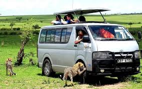
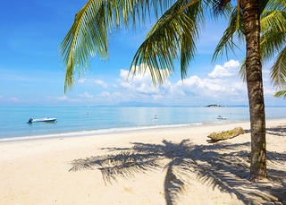
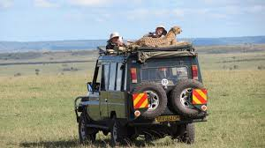
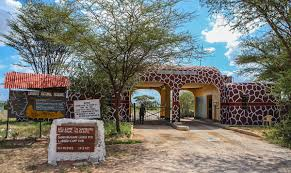

-Astroworld company began 15years ago by Hailey Kamau.The company its located across the country and worldwide whereby it provides travelling service to Kenyans and Non-Kenyans.
-If you’re looking for a vacation that provides a huge sense of personal recreation while still being fun, exciting, relaxing, adventurous and rewarding, we suggest you check out our wide range of tours and travel packages.
*Here are some of our deals:-
-It will be on 20/3/2019.The packages from Ksh.25,500/-
Mombasa is the coastal city of kenya it has long , white clean beach line with nice weather for sun bathing. we also have historical sites like old town in lamu and mombasa , fort jesus, marine parks, water sports and nice cuisines.
-Masai Mara Wildbeest Migration Safari Packages from Ksh.13,999/-
The Masai Mara Game Reserve is a vast national park located in the Great Rift Valley in Kenya. The game park offers visitors numerous attractions and has a reputation as one of the best wildlife destinations in the world. A visit to the Mara is the ultimate adventure due to its bountiful wildlife selection, stunning sights and endless plains that stretch as far as the eye can see.
-Samburu Safari Packages from Ksh.18,500/-for all 3days
The highlights of Samburu national park is the spectacular scenic beauty, rivers and forests. It is an area where the local people have a rich and colorful heritage.The reserves have numerous permanent springs and a wealth of wildlife which includes leopard, hippo, elephant, lion, reticulated giraffe, grevy zebra and crocodile in the Ewaso Nyiro river. Over 365 species of birds have been identified in the sanctuaries.
Tel. +254 (0)20-2067788, +254 (0)715-281211, +254(0)722879629, +254(0)735120 929